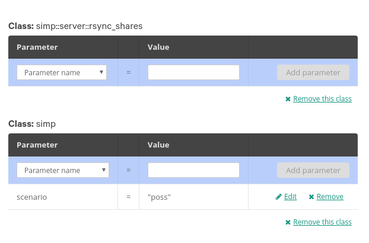

3.5. Installing SIMP on Puppet Enterprise¶
Contents:
3.5.1. Overview¶
As of 6.0, SIMP can now be installed on top of an existing Puppet Enterprise installation. Once installed SIMP will configure itself to add the necessary firewall rules, and service level exclusions based only on changes made to the PE Console.
Installing SIMP on top of Puppet Enterprise is a multi-step process, involving changes at the following places in your environment:
- manual shell commands on the Master of Masters (MoM).
- control repo
- global or environment layer hiera
- console classifier
It is highly recommended to perform these steps in sequence to prevent loss of connectivity.
At this time multiple compile masters and PE HA is not supported out of the box in SIMP. We are currently working on a Technology Preview in succeeding 6.x versions to support HA configurations out of the box. At this time HA support requires manual configuration and only supports manual failover.
3.5.2. System Requirements¶
3.5.2.1. Puppet Enterprise¶
The following versions of Puppet Enterprise are currently supported:
| PE Version | SIMP Version | Notes |
|---|---|---|
| 2016.4 | 6.0 | |
| 2016.5 | 6.0 | SIMP on PE HA requires manual configuration |
| 2017.1 | 6.0 | SIMP on PE HA requires manual configuration |
recommended to configure the replica master before installing SIMP. The replica provision process makes a lot of single time changes to the system to configure the replication, and SIMP’s security restrictions may prevent it from working properly.
3.5.2.2. Enable EPEL¶
$ sudo yum install epel-release -y
$ sudo yum install pygpgme yum-utils git
3.5.2.3. Install The SIMP-project_dependencies Repository¶
Note
The repository may contain items from external vendors, most notably Puppet, Inc. and EPEL but may also contain non-SIMP project files that have been compiled for distribution.
Add the following to /etc/yum.repos.d/simp-project_dependencies.repo,
replacing 6 with the appropriate version of SIMP. If the repo file
does not exist, create it. The repo file for SIMP 6.X is shown below.
If you don’t know what versions map together, please see the SIMP Version Guide.
Note
The whitespace and alignment shown before the additional gpgkey
values must be preserved
[simp-project_6_X_dependencies]
name=simp-project_6_X_dependencies
baseurl=https://packagecloud.io/simp-project/6_X_Dependencies/el/$releasever/$basearch
gpgcheck=1
enabled=1
gpgkey=https://raw.githubusercontent.com/NationalSecurityAgency/SIMP/master/GPGKEYS/RPM-GPG-KEY-SIMP
https://yum.puppetlabs.com/RPM-GPG-KEY-puppetlabs
https://yum.puppetlabs.com/RPM-GPG-KEY-puppet
https://apt.postgresql.org/pub/repos/yum/RPM-GPG-KEY-PGDG-94
https://getfedora.org/static/352C64E5.txt
sslverify=1
sslcacert=/etc/pki/tls/certs/ca-bundle.crt
metadata_expire=300
3.5.3. Disclaimer¶
SIMP will attempt to make minor compliance changes to Puppet Enterprise on certain versions. However we have not made major changes to bring it in-line with FIPS 140-2 to ensure that SIMP users who have a valid support license do not invalidate their support by using SIMP.
XXX TODO Insert further information relevant to the disclaimer
3.5.4. Creating or updating your Control Repo¶
A Control Repo contains the modules, hieradata, and roles/profiles required for an infrastructure, and keeping it all in a git repo creates a workflow for updating and developing on your Puppet infrastructure.
Change into the directory you’re using from above and run git init to create
a control repo. Puppet, Inc has some great `documentation of a control repo online`_.
In order to use r10k or Code Manager with SIMP, you must create or update your Control repo with the following components:
| File/Directory | Description of changes |
|---|---|
| Puppetfile | Add SIMP Puppet Modules |
| environment.conf | Configures the alternate module path for rsync and pki |
| hieradata/ | Directory that needs to contain SIMP top-scope hiera data |
| hiera.yaml | Configured with simp::scenario settings and compliance map |
3.5.4.1. Adding SIMP Modules to the Puppetfile¶
We keep an up-to-date Puppetfile in the core of our repo, which you can download using this snippet:
$ curl -o Puppetfile https://raw.githubusercontent.com/simp/simp-core/6.0.0-0/Puppetfile.stable
The example Puppetfile is labeled stable, meaning that the versions of the
modules it contains are the ones contained in the last SIMP release. You can go
to any previous release and download a Puppetfile with references to older
modules from the git history of the simp-core repo.
Our Puppetfile pulls down every dependency SIMP needs, which is currently
contains more than just modules. Open up the Puppetfile that was just
downloaded and remove the lines from moduledir 'src' to
moduledir 'src/puppet/modules'. That should just leave the Puppet modules.
3.5.4.2. Adding the Alternate Module Path to environment.conf¶
SIMP uses an alternative module path, located at /var/simp/environments/<environment>
and set in each environment’s environment.conf.
Change or add a modulepath directive like so:
modulepath=modules:/var/simp/environments/<environment>/site_files:$basemodulepath
3.5.4.3. Creating Alternate Module Path¶
Currently, it contains the rsync assets and PKI data, custom to each host. Here is an example from a fresh install:
$ tree -L 1 /var/simp/environments/production
/var/simp/environments/production
├── rsync
└── site_files
rsyncis a tree that stores data that will be copied over to modules. We have chosen rsync for these applications because of how it handles large files and large amounts of files. See Why does SIMP use rsync?.site_filesis a place to store private files that may not belong in the control repo or another data source. And example of this would be host-based x509 certificates (which are used heavily by SIMP).
- Create a puppet group to own the directories:
- groupadd puppet
Each of these directories need to be created manually, except rsync, which requires a bit more work:
export environment=production
mkdir -p /var/simp/environments/${environment}/{site_files/modules/pki_files,files/keydist}
chown root.puppet /var/simp/environments/${environment}/site_files
chmod -R g+rX /var/simp/environments/${environment}/site_files
The rsync folder has a few tricks. When installed from an ISO, this data and
folder structure is laid out by the simp-rsync rpm. When installing using the
method described in this document, the git repo will have to be cloned and
manipulated:
git clone https://github.com/simp/simp-rsync.git /tmp/simp-rsync
mv -f /tmp/simp-rsync/environments/simp/rsync /var/simp/environments/${environment}/
ln -s /var/simp/environments/${environment}/rsync/RedHat /var/simp/environments/${environment}/rsync/CentOS
chmod u+rwx,g+rX,o+rX /var/simp/{environments,environments/${environment}}
Rsync’s primary use case in a base SIMP infrastructure is to distribute ClamAV
databases. If simp_options::clamav is set to true, rsync and this step are
required.
Install clamav-update and download the latest database using the following
config and commands, replacing <environment> with your environment.
$ cat << EOF > /tmp/freshclam.conf
DatabaseDirectory /var/simp/environments/${environment}/rsync/Global/clamav
DatabaseMirror database.clamav.net
Bytecode yes
EOF
yum install -y clamav-update
freshclam -u root --config-file=/tmp/freshclam.conf
Be careful when copying the first rsync environment around. There are hidden
files in each folder that represents and rsync share called .shares. There
is a fact in the simp modules that checks for that files. The fact is then
ingested by simp::server::rsync_shares and rsync shares are created on the
Puppet server.
.. _simp-core Git repository: https://github.com/simp/simp-core/tree/master/build/distributions/CentOS/7/x86_64/DVD/ks
.. _simp-core: https://github.com/simp/simp-core/
.. _documentation of a control repo online: https://docs.puppet.com/pe/latest/cmgmt_control_repo.html
3.5.5. Configuring Hiera¶
In order to configure a working SIMP environment in a control-repo, you will need to add some settings to hiera. If you do not have a hiera.yaml in the root of your control-repo, you can use Puppet’s environment layer feature and just create a hiera.yaml file with the following contents:
---
version: 4
datadir: hieradata
hierarchy:
- name: 'Common'
backend: yaml
path: 'common'
- name: "Compliance"
backend: yaml
path: 'compliance_profiles/%{::compliance_profile}'
- name: "Scenario"
backend: yaml
path: 'scenarios/%{::simp_scenario}'
If running a version of SIMP 6 prior to 6.0.1, you will need to tweak your common.yaml to work around a bug in 6.0.0 and the Release candidate:
pupmod::pe_classlist:
puppet_enterprise::profile::database:
users:
- pe-postgres
services:
- pe-postgresql
firewall_rules:
- proto: tcp
port: 5432
puppet_enterprise::profile::puppetdb:
users:
- pe-puppetdb
services:
- pe-puppetdb
firewall_rules:
- proto: tcp
port: 8081
3.5.6. Node Classification¶
Create a node group called ‘SIMP Servers’, and assign the Master of Masters to the group.
This server needs to have two classes assigned:
simp
simp::server::rsync_shares
You will also need to specify your simp::scenario. ‘poss’ will only manage pupmod and will generally work with PE without any extra configuration. However it will not bring the server up to any compliance standard. ‘simp-lite’ and ‘simp’ scenarios will reconfigure the server with various compliance settings.
3.5.7. Preparing rsync certs¶
hostname=$(hostname)
mkdir -p /etc/pki/simp_apps/stunnel/x509/{public,private,cacerts}
cp /etc/puppetlabs/puppet/ssl/certs/${hostname}.pem /etc/pki/simp_apps/stunnel/x509/public/${hostname}.pub
cp /etc/puppetlabs/puppet/ssl/ca/ca_crt.pem /etc/pki/simp_apps/stunnel/x509/cacerts/cacerts.pem
cp /etc/puppetlabs/puppet/ssl/private_keys/${hostname}.pem /etc/pki/simp_apps/stunnel/x509/private/